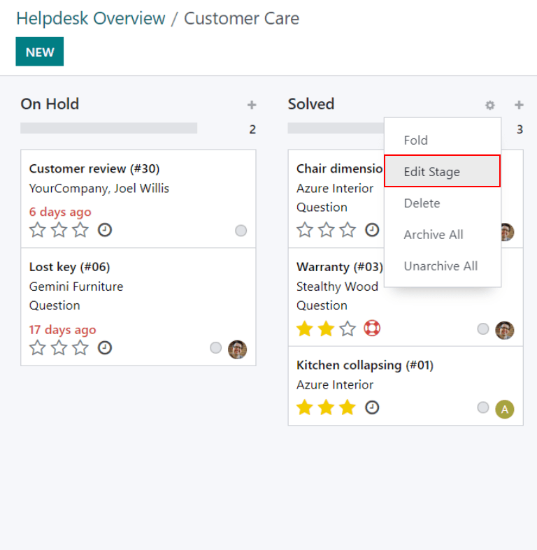
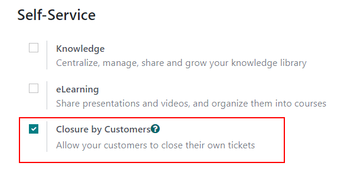

Closing tickets¶
Once work has been completed on a Helpdesk ticket in Odoo, there are several ways it can be closed. Manually closing solved tickets keeps the pipeline up to date, while automatically closing inactive tickets prevents unnecessary blocking issues. Allowing customers to close their own tickets minimizes confusion around whether an issue is considered solved or not. This results in increased operational capacity for support teams, and higher customer satisfaction.
Manually close solved tickets¶
As work on a ticket progresses, it is moved along to the next stage in the pipeline. Once the issue is solved, the ticket is moved to a folded stage. This marks the ticket as closed.
To fold a stage, navigate to the dashboard and click on a team to open the pipeline. Hover over a stage’s heading, and then click the gear icon that appears in the top-right corner of that stage’s kanban column.
Warning
Clicking the gear icon also displays the option to Fold the stage. This setting folds the stage temporarily to simplify the kanban view. This does not close the tickets in this stage. It also does not permanently fold the stage. If a stage needs to be folded so the tickets can be marked as closed, continue following the steps below.
From the menu that appears, select Edit Stage. This will open the stage’s settings. Check the box labeled Folded in Kanban towards the top of the window, and then Save & Close to confirm the changes. Now, tickets that reach this stage will be considered as closed.

Automatically close inactive tickets¶
Tickets that are inactive for a set period of time can be automatically closed. At that point, they will be moved to a folded stage.
Go to the team’s settings page by going to . Under the Self-Service section, enable Automatic Closing.
If one of the team’s stages is set to be folded in the kanban view, it will be the default selection in the Move to Stage field. If the team has more than one folded stage, the stage that occurs first in the pipeline will be the default. If no stage is folded, the default selection will be the last stage in the pipeline.
The After days of inactivity field defaults to 7, but can be adjusted if necessary.
Warning
The After days of inactivity field does not take the working calendar into account when tracking the amount of time a ticket has been inactive.
If only certain stages should be used to track days of inactivity, they can be added to the In Stages field.
Example
A team’s pipeline is created with the following stages:
NewIn ProgressCustomer FeedbackClosed
Tickets can linger in the Customer Feedback stage, because once an issue is solved, customers may not respond immediately. At that point, the tickets can be closed automatically. However, tickets in the New and In Progress stages may remain inactive due to assignment or workload issues. Closing these tickets automatically would result in issues going unsolved.
Therefore, the Automatic Closing settings would be configured as below:
Automatic Closing: checked
Move to Stage:
SolvedAfter``7days of inactivity
In Stages:
Customer Feedback
Allow customers to close their own tickets¶
Enabling the Closure by Customers setting allows customers to close their own ticket(s) when they determine that their issue has been resolved.
Start by navigating to and select a team. On the team’s settings page, scroll to the Self-Service section and check the box for Closure by Customers.
Once the ticket closing settings are enabled, a Close Ticket button will be available for customers when they view their ticket through the customer portal.

Note
Customers are able to view their tickets by clicking the View the ticket link they receive by email. The link is included in the Request Acknowledgment template, which is added to the first stage of a team by default. This link does not require a customer to have access to the portal to view or respond to their ticket.
Customers with access to the portal will be able to view their tickets under .